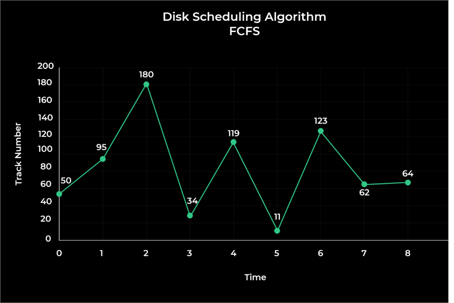

FCFS (First-Come, First-Served) Disk Scheduling Algorithm is a simple and easy-to-implement algorithm used in operating systems to manage input/output (I/O) requests from processes to access disk blocks.
In this algorithm, the operating system processes the I/O requests in the order in which they arrive in the queue, without any reordering or prioritization.
When a process generates an I/O request, it is added to the end of the queue, and the operating system services the requests in the same order.
The requests are serviced one by one until the entire queue is empty. This algorithm has the advantage of being fair, predictable, and requiring low overhead.
However, it also has limitations, such as long waiting times for requests that arrive later and potential starvation of requests that are stuck behind long-running requests. FCFS may not be suitable for systems with a high volume of I/O requests or where requests have different priorities.
Example:
Track Range from 0 to 199 and head initially is rested on 50
95, 180, 34, 119, 11, 123, 62, 64
First the head from 50 goes to 95 then→95→180→34→119→11→123→62→64
Total Head Movement Computation: (THM)
(95 – 50) + (180 – 95) + (180-34) + (119-34) + (119-11) + (123-11) + (123-62) + (64-62)

Advantages & Disadvantages:
1.Simple
2.Not complex
3. Easy to implement
4. No starvation
5. Low overhead
The following are the disadvantages of FCFS scheduling algorithm:
1. No preemption possible
2. Low throughput
3. Best services may not be delivered